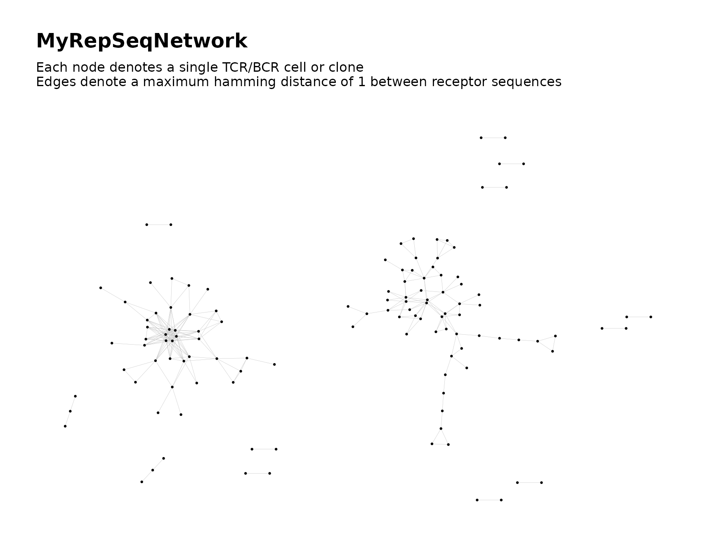
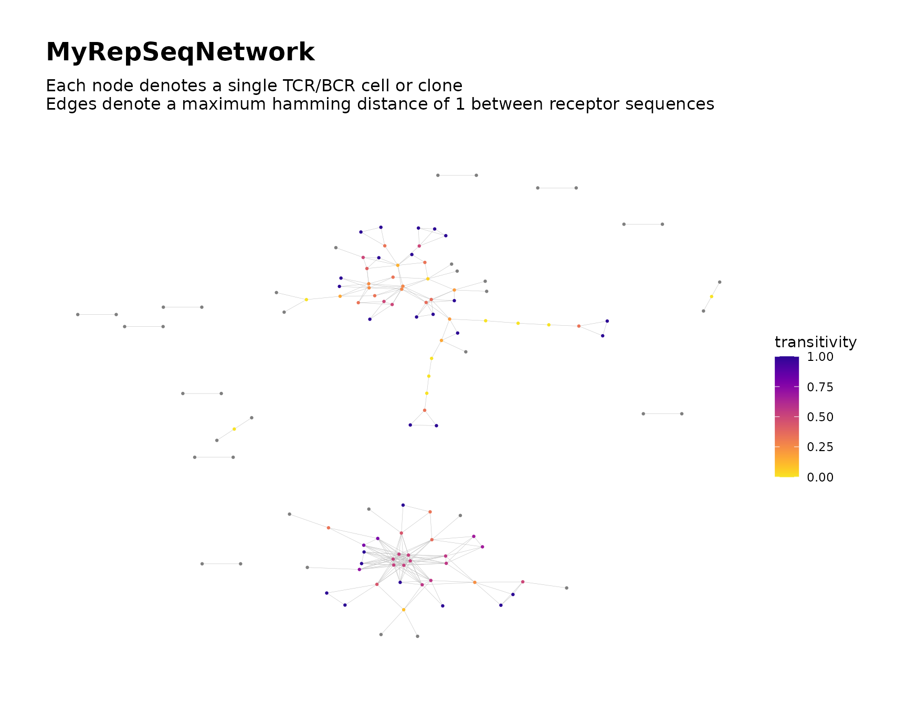
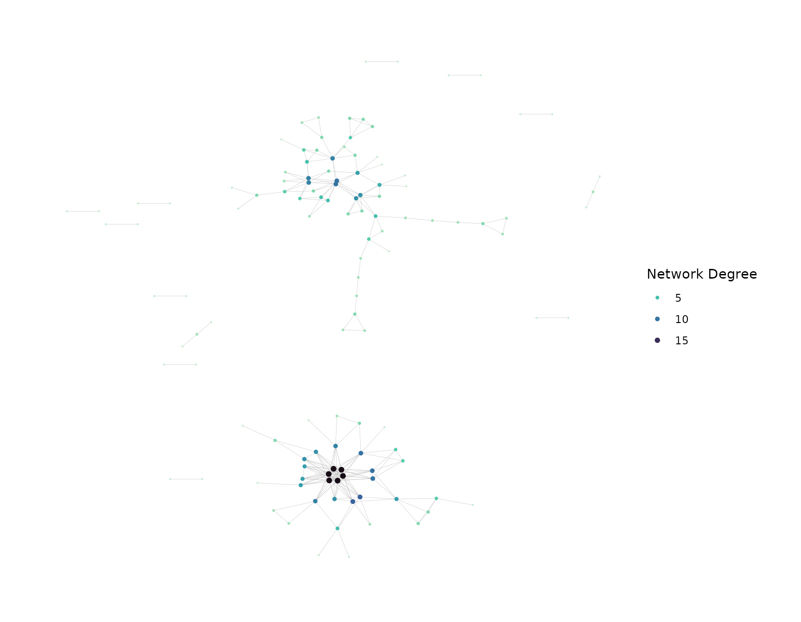

Introduction
Customized visual plots of a network graph can be produced when
calling buildRepSeqNetwork() and afterward using using
addPlots().
Simulate Data for Demonstration
set.seed(42)
library(NAIR)
#> Welcome to NAIR: Network Analysis of Immune Repertoire.
#> Get started using `vignette("NAIR")`, or by visiting
#> https://mlizhangx.github.io/Network-Analysis-for-Repertoire-Sequencing-/
toy_data <- simulateToyData()Producing Plots
With buildRepSeqNetwork()/buildNet()
buildRepSeqNetwork() automatically generates a plot of
the network graph by default:
net <- buildNet(toy_data, "CloneSeq")
net$plots$uniform_color
With
addPlots()
addPlots() can be used with the list returned by
buildRepSeqNetwork() to generate additional plots of the
network graph.
net <- addPlots(net, color_nodes_by = "SampleID")
net$plots$SampleID
Reproducibility of Graph Layout
When creating the initial plot for a network, the coordinate layout
of the nodes is generated pseudo-randomly. Other plots created in the
same call to buildRepSeqNetwork() and subsequent calls to
addPlots() will use the same graph layout as the initial
plot (compare the previous two plots).
Different calls to buildRepSeqNetwork(), however, can
produce plots of the same network with different layouts (compare the
previous plot and next plot). For this reason, it is recommended to use
set.seed() before calling
buildRepSeqNetwork(). This allows the same graph layout to
be reproduced across multiple executions of the same code in which the
initial plots are generated.
Node Colors
Color Nodes According to Metadata
The nodes in the graph can be colored according to available
metadata. The color_nodes_by parameter accepts a character
string naming the variable to use. This can be any variable present in
the node
metadata.
buildNet(toy_data, "CloneSeq",
color_nodes_by = "CloneCount",
print_plots = TRUE
)
Node Color Scale
The color_scheme parameter accepts a character string
naming a preset color scale to use when coloring the nodes. It accepts
the following values:
-
"default"for defaultggplot2colors - One of the following color scales from the
viridispackage: -
"magma"(or"A") -
"inferno"(or"B") -
"plasma"(or"C") -
"viridis"(or"D") -
"cividis"(or"E") -
"rocket"(or"F") -
"mako"(or"G") -
"turbo"(or"H") - Any of the above
viridiscolor scales with"-1"appended (e.g.,"mako-1"), which reverses the direction of the color scale - If the variable is discrete, a color palette from
grDevices::hcl.pals()(e.g.,"RdBu")
net <- buildNet(toy_data, "CloneSeq",
node_stats = TRUE,
color_nodes_by = "transitivity",
color_scheme = "plasma-1",
print_plots = TRUE
)
Custom Color Scales
The color scales that are available through the
color_scheme parameter are limited to a selection of preset
color scales. A customized color scale can be applied to the plot after
it is created.
If the variable used to color the nodes is continuous, a custom
two-color gradient can be applied using
ggplot2::scale_color_gradient().
net$plots$transitivity <- net$plots$transitivity +
ggplot2::scale_color_gradient(low = "pink", high = "purple4")
#> Scale for colour is already present.
#> Adding another scale for colour, which will replace the existing scale.
net$plots$transitivity 
Similarly, ggplot2::scale_color_gradient2() can be used
to apply a three-color diverging gradient.
If the variable used to color the nodes is discrete, a custom color
palette can be applied using the
ggplot2::scale_color_manual() function, which allows the
user to specify the color used for each value. The parameter
values accepts a vector of colors whose length matches the
number of unique values.
# Sample ID is a discrete variable
net <- addPlots(net, color_nodes_by = "SampleID")
net$plots$SampleID <- net$plots$SampleID +
ggplot2::scale_color_manual(values = c("deepskyblue", "red2"))
net$plots$SampleID
Node Size
By default, all nodes are drawn using a uniform size value of 0.5. This value is suitable for large networks with many nodes.
The node size can be specified by providing a positive value to the
size_nodes_by parameter.
net <- addPlots(net,
color_nodes_by = "transitivity",
color_scheme = "plasma-1",
size_nodes_by = 1.5,
print_plots = TRUE
)Size Nodes According to Metadata
The nodes can be sized dynamically according to a variable in the node
metadata. The size_nodes_by parameter accepts a
character string naming the variable.
The node size scale can be adjusted using the
node_size_limits parameter, which accepts a numeric vector
of length two specifying the minimum and maximum node size.
net <- addPlots(net,
color_nodes_by = "transitivity",
color_scheme = "plasma-1",
size_nodes_by = "degree",
node_size_limits = c(0.1, 2.5),
print_plots = TRUE
)
Text Elements
This section covers parameters that control text elements in the plot, such as titles, annotations and legends.
Title and Subtitle
The default title for plots created by
buildRepSeqNetwork() is the argument value to the
output_name parameter ("MyRepSeqNetwork" by
default). Plots created by addPlots() have no default
title.
For both buildRepSeqNetwork() and
addPlots(), the default subtitle includes information about
the network’s construction, such as the values of dist_type
and dist_cutoff.
A custom plot title and subtitle can be provided as character strings
to the plot_title and plot_subtitle
parameters. An argument value of NULL omits the
corresponding element from the plot.
net <- addPlots(
net,
plot_title = "Immune Repertoire Network by TCR Sequence Similarity",
plot_subtitle = NULL
)Legends
Hiding Legends
By default, if the nodes are colored or sized dynamically according to a variable, a legend will be included in the plot showing the color scale and/or size scale.
The color scale legend can be hidden using
color_legend = FALSE. Similarly,
size_legend = FALSE hides the size scale legend.
Note: When the variable used to color the nodes is
discrete with more than 20 distinct values, the color scale is
automatically excluded from the legend to prevent it from crowding the
plot. The name of the node color variable is then appended to the plot’s
subtitle. To force the color legend to be shown, use
color_legend = TRUE.
Legend Titles
The default titles of the color and size scales are the names of the
variables used to color and size the nodes. Custom titles can be
provided as character strings to the color_title and
size_title parameters. An argument value of
NULL or "" omits the title.
If a vector is provided to the color_nodes_by parameter
in order to generate multiple plots, then
the color_title accepts a character vector of matching
length, where each entry is the title for the color legend in the
corresponding plot.
Labeling Clusters
After performing cluster analysis, it can be helpful to label clusters in the plot with their cluster IDs for reference, as shown here.
Labeling Nodes
addGraphLabels() can be used to label individual
nodes.
Generating Multiple Plots
buildRepSeqNetwork() and addPlots() can
generate multiple plots in a single call, with each plot coloring the
nodes according to a different variable. The color_nodes_by
parameter accepts a character vector naming the variables to use. The
color_scheme parameter will accept a character vector of
matching length specifying the color scale for each plot, or a character
string specifying a single color scale to use in all plots.
net <- addPlots(net,
color_nodes_by = c("coreness", "degree"),
color_scheme = c("plasma-1", "mako-1"),
color_title = c("Coreness", "Network Degree"),
size_title = "Network Degree",
size_nodes_by = "degree",
node_size_limits = c(0.1, 1.5),
plot_subtitle = NULL,
print_plots = TRUE
)
Saving Plots
After adding or modifying plots in the list of network objects, the
list of network objects can be saved using saveNetwork(),
which also prints the plots to a PDF. saveNetworkPlots()
saves the PDF only.
saveNetwork(net, output_dir = dir_out)
saveNetworkPlots(net$plots, outfile = file.path(dir_out, "plots.pdf"))